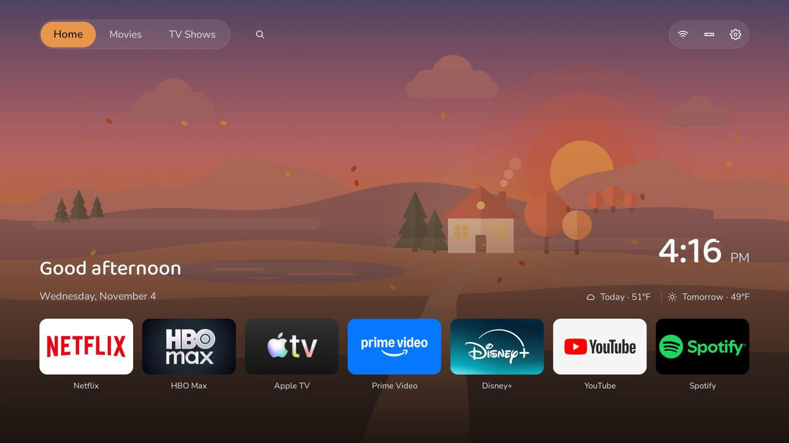

Put the HomeTV Launcher on your TV
A calm, simple home screen for Android TV and Google TV: your apps, the weather, and what's on where you already pay.

The demo runs in your browser with sample data. Your keyboard's arrow keys and Enter stand in for the remote.
1What you need
- An Android TV or Google TV (Sony, TCL, Philips, Hisense, Xiaomi and most others). It does not work on Samsung, LG or Fire TV.
- A Windows laptop on the same Wi-Fi as the TV.
- The TV remote, and about 15 minutes.
Nothing on the TV changes until you say yes. The installer saves a backup on your laptop first, and every step can be undone.
2Get the TV ready
With the remote, switch on Developer options. The menu names differ a little by TV:
- Android TV: Settings › Device Preferences › About, then press OK on Build 7 times.
- Google TV: Settings › System › About, then press OK on Android TV OS build 7 times.
The TV says "You are now a developer". Leave debugging off for now: the installer tells you when to switch it on, after a question about what's plugged into the TV.
Last, find the TV's address: Settings › Network & Internet › your network shows an IP address, like 192.168.1.50. Write it down.
3Download the installer
Not available yet: the first release is on its way.
Check the download (optional)
On the release page, open SHA256SUMS. In PowerShell, Get-FileHash .\family-install.ps1 must print the same code it lists for family-install.ps1.
4Run it
- Open your Downloads folder, right-click family-install.ps1 and choose Run with PowerShell.
- If a blue box says "Windows protected your PC": choose More info, then Run anyway.
- If the window closes at once, or says scripts are disabled: open PowerShell (Start, type PowerShell, Enter) and paste this line:
cd $HOME\Downloads; powershell -ExecutionPolicy Bypass -File .\family-install.ps1
5Answer its questions
- It asks what's plugged into the TV's USB ports, then tells you to open Developer options and turn on USB debugging, and Network debugging (or ADB debugging) if you see it.
- It asks for the TV's address from step 2.
- Watch the TV: it asks "Allow USB debugging?". Tick Always allow from this computer, then OK.
- It backs the TV up, installs the launcher and makes it the home screen. You may be asked to press Home, Input and Settings on the remote, to see that they work.
- The TV then opens First run: pick your weather, streaming services and apps with the remote.
6Switch debugging off again
At the end the installer walks you through it: in Developer options, Revoke USB debugging authorisations, turn USB debugging and Network debugging off, and restart the TV. Once the TV is back on the home screen, the installer checks that it's really off.
If something goes wrong
- The installer stops with a plain message saying what was changed (usually nothing). Send the last lines in the window to the person helping you.
- To undo it: switch debugging on again and run, with your backup folder (the installer tells you where it is):
cd $HOME\Downloads; powershell -ExecutionPolicy Bypass -File .\family-install.ps1 -Restore "$HOME\HomeTV\backups\<your TV>-<date>" - If Windows won't let you download the file at all, the person helping you may ask you to paste this into PowerShell instead:
cd $HOME\Downloads; [Net.ServicePointManager]::SecurityProtocol = [Net.ServicePointManager]::SecurityProtocol -bor 'Tls12'; try { irm https://github.com/rebeccamcfadden/hometv-launcher/releases/latest/download/family-install.ps1 -OutFile family-install.ps1 -ErrorAction Stop; powershell -ExecutionPolicy Bypass -File .\family-install.ps1 } catch { "The download failed: $($_.Exception.Message)" }